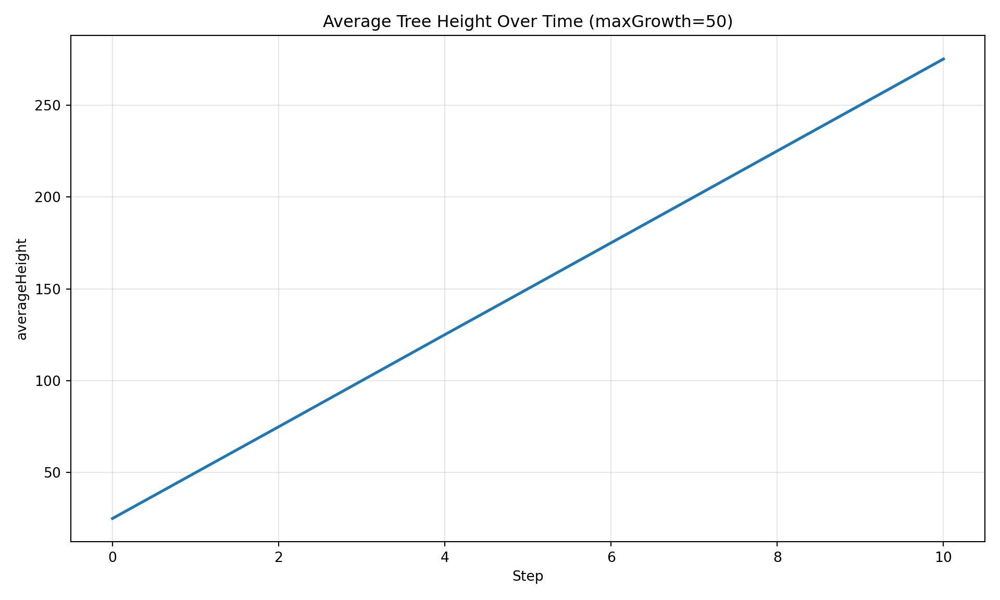
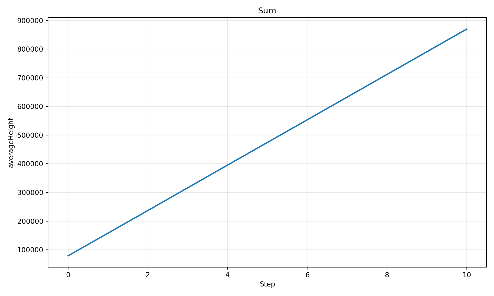
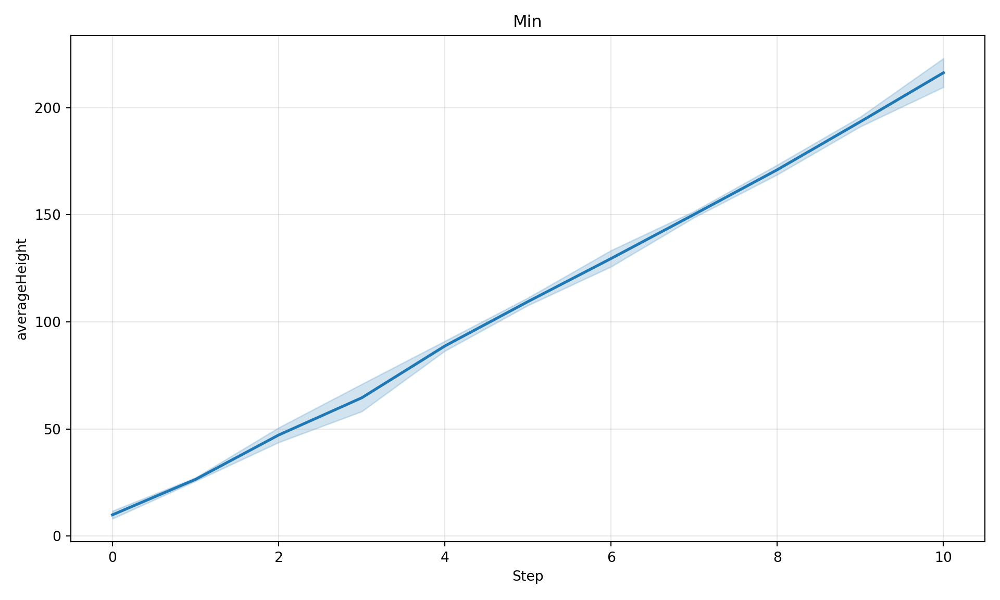
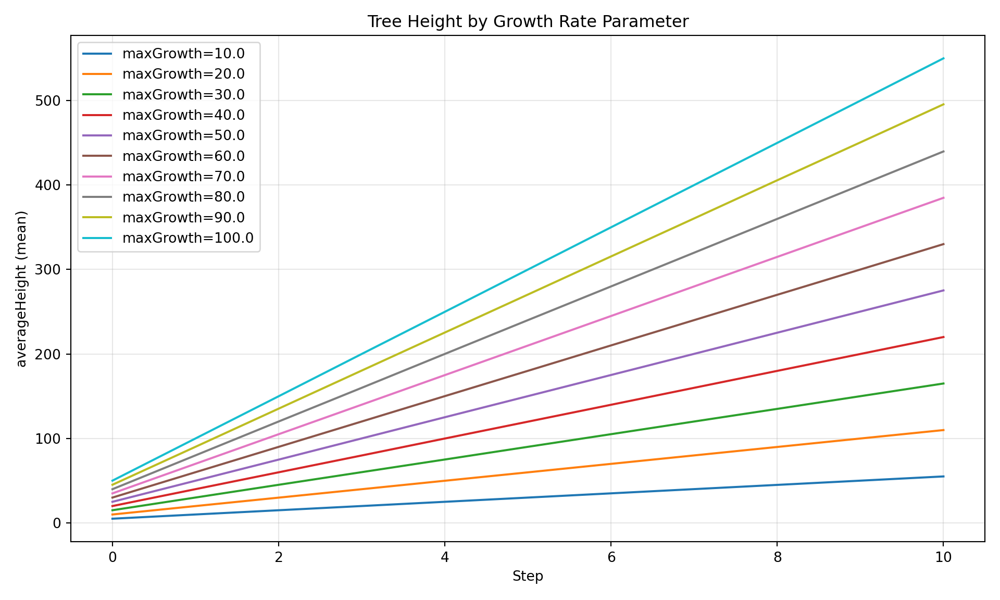
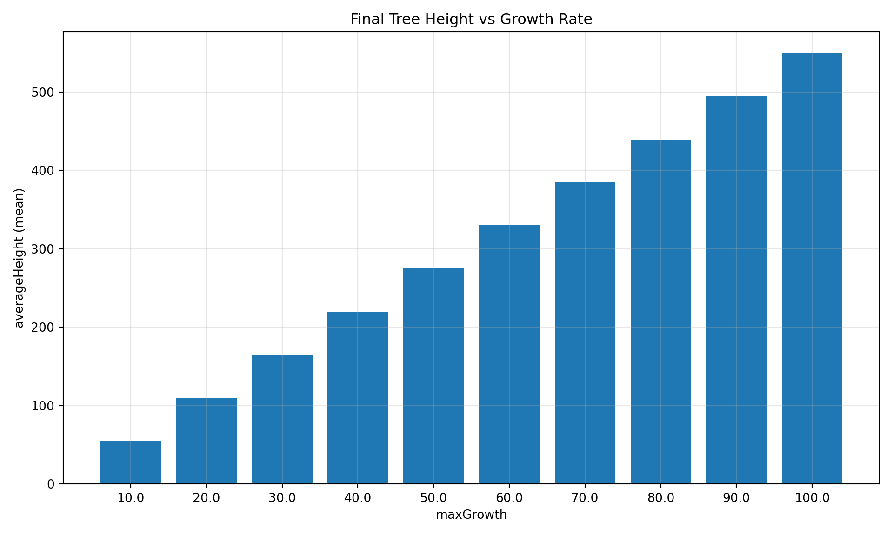
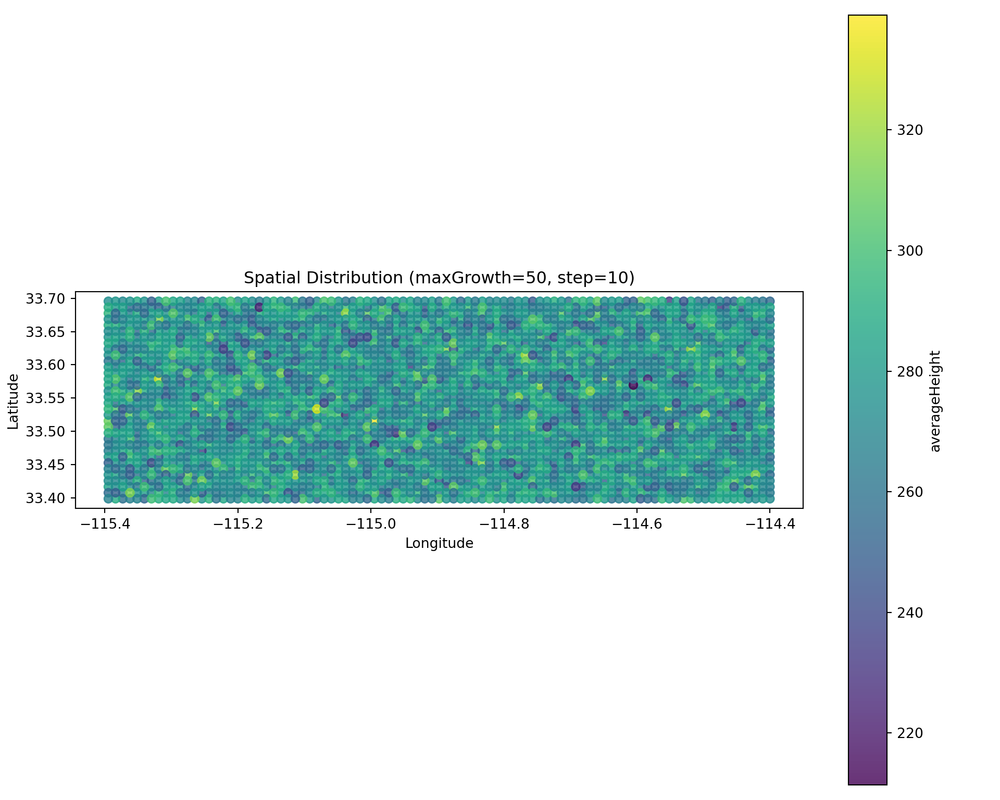
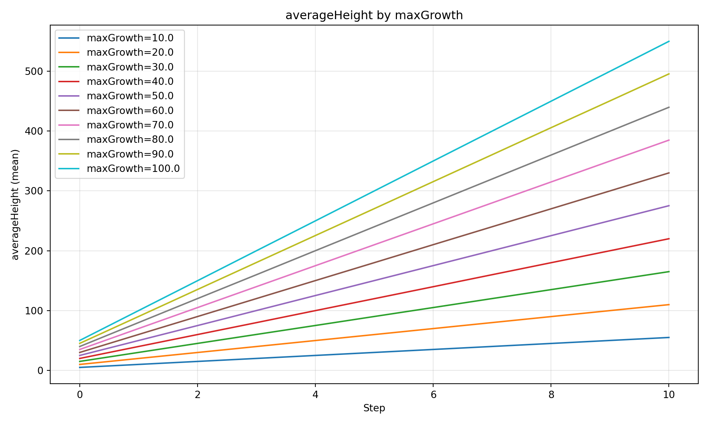
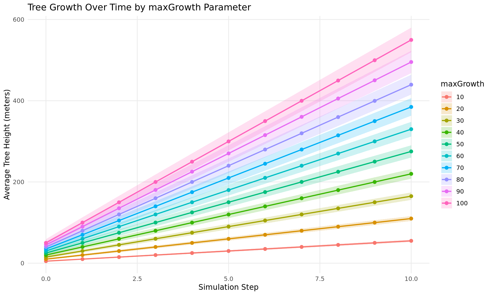
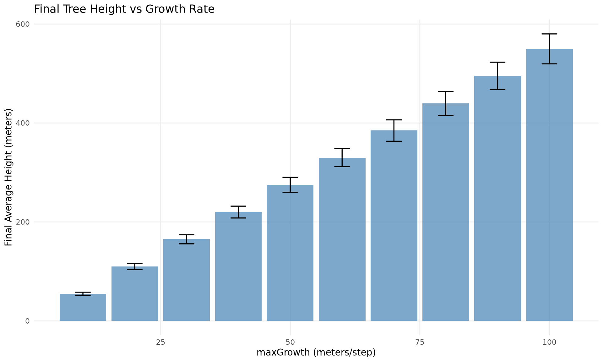
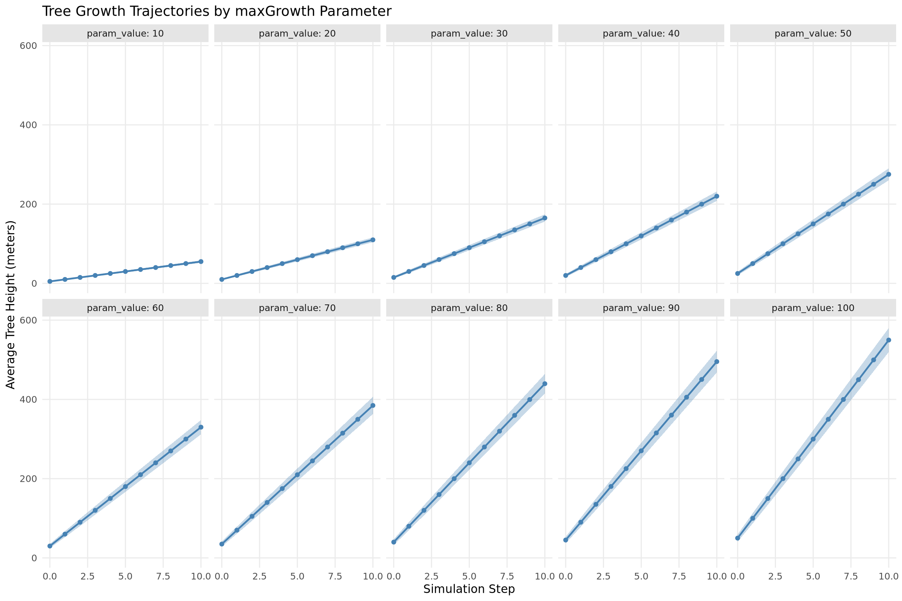

from joshpy.registry import RunRegistry
# Load registry from disk (created by demo_manual.qmd or demo_sweep_manager.qmd)
REGISTRY_PATH = "demo_registry.duckdb"
registry = RunRegistry(REGISTRY_PATH)joshpy Analysis & Visualization Demo
Introduction
This demo focuses on exploring and visualizing simulation results after they’ve been collected. The analysis layer in joshpy is decoupled from orchestration - it only needs a RunRegistry containing data. Whether the data came from SweepManager, manual workflow, or someone else’s experiment doesn’t matter.
Prerequisites: Run either demo_manual.qmd or demo_sweep_manager.qmd first to generate demo_registry.duckdb.
For orchestration workflows, see:
demo_manual.qmd- Step-by-step control using individual componentsdemo_sweep_manager.qmd- Simplified workflow withSweepManager
This demo covers:
- Data Discovery - What’s in the registry?
- Diagnostic Plots - Quick matplotlib visualizations
- Custom Queries -
DiagnosticQueriesfor common patterns - Direct SQL - Full access to DuckDB for advanced analysis
- R/ggplot2 - Publication-quality figures
Setup: Load Registry
Load the registry saved by a previous orchestration demo:
Part 1: Data Discovery
Before plotting, discover what data is available in the registry.
Full Summary
summary = registry.get_data_summary()
print(summary)Registry Data Summary
========================================
Sessions: 1
Configs: 10
Runs: 10
Rows: 1,043,460
Variables: averageAge, averageHeight
Entity types: patch
Parameters: maxGrowth, seedDensity
Steps: 0 - 10
Replicates: 0 - 2
Spatial extent: lon [-115.39, -114.40], lat [33.40, 33.70]Specific Queries
# What variables were exported from the simulation?
registry.list_export_variables()['averageAge', 'averageHeight']# What parameters were swept?
registry.list_config_parameters()['maxGrowth', 'seedDensity']# What entity types are in the data?
registry.list_entity_types()['patch']Variable Columns
# List all variable columns in the cell_data table
registry.list_variable_columns()['averageAge', 'averageHeight']Part 2: Diagnostic Plots (SimulationDiagnostics)
The SimulationDiagnostics class provides quick matplotlib-based visualizations for simulation sanity checks. These are designed for rapid exploration, not publication.
from joshpy.diagnostics import SimulationDiagnostics
diag = SimulationDiagnostics(registry)Time Series
Plot how a variable evolves over simulation steps. By default, spatially aggregates across patches and shows uncertainty bands across replicates.
# Filter by parameter value
diag.plot_timeseries(
"averageHeight",
maxGrowth=50,
title="Average Tree Height Over Time (maxGrowth=50)",
)
Aggregation Options
# Sum across patches
diag.plot_timeseries("averageHeight", maxGrowth=50, aggregate="sum", title="Sum")
# Min across patches
diag.plot_timeseries("averageHeight", maxGrowth=50, aggregate="min", title="Min")

Parameter Comparison
Compare a variable across different parameter values - ideal for sweep results.
diag.plot_comparison(
"averageHeight",
group_by="maxGrowth",
title="Tree Height by Growth Rate Parameter",
)
Bar Chart at Specific Step
diag.plot_comparison(
"averageHeight",
group_by="maxGrowth",
step=10,
title="Final Tree Height vs Growth Rate",
)
Spatial Snapshot
Scatter plot colored by value at a specific timestep:
# Get a run hash for maxGrowth=50
run_hash_50 = registry.get_runs_by_parameters(maxGrowth=50)[0]["run_hash"]
diag.plot_spatial(
"averageHeight",
step=10,
run_hash=run_hash_50,
title="Spatial Distribution (maxGrowth=50, step=10)",
)
Saving Figures
All plot methods return a matplotlib Figure that can be saved:
fig = diag.plot_comparison(
"averageHeight",
group_by="maxGrowth",
show=False, # Don't display inline
)
fig.savefig("/tmp/comparison_plot.png", dpi=150, bbox_inches="tight")
Part 3: Custom Queries (DiagnosticQueries)
For more control than SimulationDiagnostics, use DiagnosticQueries directly. These return pandas DataFrames for further processing.
from joshpy.cell_data import DiagnosticQueries
queries = DiagnosticQueries(registry)Parameter Comparison
df = queries.get_parameter_comparison(
variable="averageHeight",
param_name="maxGrowth",
)
df.head(15)| param_value | step | mean_value | std_value | n_cells | |
|---|---|---|---|---|---|
| 0 | 10.0 | 0 | 4.985592 | 0.916868 | 9486 |
| 1 | 10.0 | 1 | 9.992988 | 1.295249 | 9486 |
| 2 | 10.0 | 2 | 14.998024 | 1.591674 | 9486 |
| 3 | 10.0 | 3 | 19.995482 | 1.849681 | 9486 |
| 4 | 10.0 | 4 | 24.991823 | 2.074878 | 9486 |
| 5 | 10.0 | 5 | 29.992699 | 2.264158 | 9486 |
| 6 | 10.0 | 6 | 34.995377 | 2.439542 | 9486 |
| 7 | 10.0 | 7 | 40.001904 | 2.604242 | 9486 |
| 8 | 10.0 | 8 | 45.005914 | 2.752203 | 9486 |
| 9 | 10.0 | 9 | 50.010752 | 2.903562 | 9486 |
| 10 | 10.0 | 10 | 55.012946 | 3.048222 | 9486 |
| 11 | 20.0 | 0 | 9.973008 | 1.825833 | 9486 |
| 12 | 20.0 | 1 | 19.958581 | 2.630574 | 9486 |
| 13 | 20.0 | 2 | 29.914964 | 3.203781 | 9486 |
| 14 | 20.0 | 3 | 39.893251 | 3.668306 | 9486 |
Replicate Uncertainty
Get statistics across replicates for a specific run:
df = queries.get_replicate_uncertainty(
variable="averageHeight",
run_hash=run_hash_50,
)
df.head(10)| step | mean | std | ci_low | ci_high | n_replicates | |
|---|---|---|---|---|---|---|
| 0 | 0 | 24.987137 | 0.116160 | 24.855693 | 25.118582 | 3 |
| 1 | 1 | 49.961423 | 0.119102 | 49.826649 | 50.096197 | 3 |
| 2 | 2 | 74.921864 | 0.114632 | 74.792147 | 75.051580 | 3 |
| 3 | 3 | 100.002835 | 0.160782 | 99.820896 | 100.184773 | 3 |
| 4 | 4 | 125.073777 | 0.134196 | 124.921923 | 125.225631 | 3 |
| 5 | 5 | 150.043610 | 0.276521 | 149.730703 | 150.356518 | 3 |
| 6 | 6 | 175.055694 | 0.309715 | 174.705225 | 175.406163 | 3 |
| 7 | 7 | 200.060930 | 0.302578 | 199.718537 | 200.403322 | 3 |
| 8 | 8 | 225.086460 | 0.257702 | 224.794848 | 225.378071 | 3 |
| 9 | 9 | 250.093739 | 0.340376 | 249.708574 | 250.478904 | 3 |
Spatial Snapshot
Get all spatial data for a given timestep:
df = queries.get_spatial_snapshot(
step=10,
variable="averageHeight",
run_hash=run_hash_50,
)
df.head(10)| longitude | latitude | value | |
|---|---|---|---|
| 0 | -114.670342 | 33.515639 | 285.867148 |
| 1 | -114.940586 | 33.434700 | 250.227716 |
| 2 | -114.573054 | 33.605571 | 270.741851 |
| 3 | -114.616293 | 33.686510 | 261.999639 |
| 4 | -114.746010 | 33.470673 | 290.455425 |
| 5 | -114.616293 | 33.542619 | 290.053090 |
| 6 | -114.605483 | 33.497653 | 266.357287 |
| 7 | -114.648722 | 33.524632 | 240.455123 |
| 8 | -114.486576 | 33.578592 | 291.656788 |
| 9 | -114.918966 | 33.524632 | 307.008989 |
Get All Variables at Once
Retrieve all exported variables for a specific step:
df = queries.get_all_variables_at_step(
step=10,
run_hash=run_hash_50,
)
df.head(5)| longitude | latitude | position_x | position_y | averageAge | averageHeight | |
|---|---|---|---|---|---|---|
| 0 | -114.670342 | 33.515639 | 67.5 | 20.5 | 11.0 | 285.867148 |
| 1 | -114.940586 | 33.434700 | 42.5 | 29.5 | 11.0 | 250.227716 |
| 2 | -114.573054 | 33.605571 | 76.5 | 10.5 | 11.0 | 270.741851 |
| 3 | -114.616293 | 33.686510 | 72.5 | 1.5 | 11.0 | 261.999639 |
| 4 | -114.746010 | 33.470673 | 60.5 | 25.5 | 11.0 | 290.455425 |
Part 4: Direct SQL Queries
For full flexibility, query DuckDB directly.
Simple Aggregations
# Mean, min, max across all cells per step
result = registry.query("""
SELECT
step,
AVG(averageHeight) as mean_height,
MIN(averageHeight) as min_height,
MAX(averageHeight) as max_height,
STDDEV(averageHeight) as std_height,
COUNT(*) as n_cells
FROM cell_data
GROUP BY step
ORDER BY step
""")
result.df()| step | mean_height | min_height | max_height | std_height | n_cells | |
|---|---|---|---|---|---|---|
| 0 | 0 | 27.498219 | 1.742091 | 79.833337 | 15.458657 | 94860 |
| 1 | 1 | 55.001141 | 5.847044 | 153.317391 | 29.833821 | 94860 |
| 2 | 2 | 82.495479 | 9.303530 | 216.835021 | 44.214606 | 94860 |
| 3 | 3 | 109.987677 | 13.241369 | 266.317071 | 58.588280 | 94860 |
| 4 | 4 | 137.496345 | 17.423860 | 331.206587 | 72.939624 | 94860 |
| 5 | 5 | 164.978456 | 22.180849 | 382.337688 | 87.305097 | 94860 |
| 6 | 6 | 192.472503 | 25.658508 | 442.514266 | 101.661092 | 94860 |
| 7 | 7 | 219.958529 | 31.130329 | 495.688919 | 116.002482 | 94860 |
| 8 | 8 | 247.458007 | 35.800588 | 545.651852 | 130.372669 | 94860 |
| 9 | 9 | 274.912546 | 40.539135 | 601.433259 | 144.691901 | 94860 |
| 10 | 10 | 302.420462 | 44.108972 | 658.114954 | 159.059075 | 94860 |
Filtering on Variable Values
# Find cells where trees grew above a threshold
result = registry.query("""
SELECT
step,
COUNT(*) as n_cells_above_50,
AVG(averageHeight) as mean_height_of_those
FROM cell_data
WHERE averageHeight > 50
GROUP BY step
ORDER BY step
""")
result.df()| step | n_cells_above_50 | mean_height_of_those | |
|---|---|---|---|
| 0 | 0 | 8354 | 56.162238 |
| 1 | 1 | 51280 | 78.321814 |
| 2 | 2 | 67327 | 104.309068 |
| 3 | 3 | 75603 | 130.308763 |
| 4 | 4 | 80507 | 156.239478 |
| 5 | 5 | 85238 | 180.186523 |
| 6 | 6 | 85374 | 209.969962 |
| 7 | 7 | 85375 | 239.951495 |
| 8 | 8 | 85707 | 269.102242 |
| 9 | 9 | 90109 | 286.892974 |
| 10 | 10 | 94386 | 303.694174 |
Percentile Analysis
# Get distribution statistics per step
result = registry.query("""
SELECT
step,
APPROX_QUANTILE(averageHeight, 0.25) as p25,
APPROX_QUANTILE(averageHeight, 0.50) as median,
APPROX_QUANTILE(averageHeight, 0.75) as p75,
APPROX_QUANTILE(averageHeight, 0.95) as p95
FROM cell_data
GROUP BY step
ORDER BY step
""")
result.df()| step | p25 | median | p75 | p95 | |
|---|---|---|---|---|---|
| 0 | 0 | 14.521352 | 26.498282 | 39.044853 | 54.141045 |
| 1 | 1 | 29.845078 | 54.184792 | 78.616196 | 104.095711 |
| 2 | 2 | 45.101176 | 81.671419 | 118.584697 | 154.037254 |
| 3 | 3 | 60.135226 | 109.192233 | 158.171450 | 203.726931 |
| 4 | 4 | 75.061258 | 136.904656 | 198.211455 | 253.148649 |
| 5 | 5 | 90.149561 | 164.119449 | 237.792066 | 302.964635 |
| 6 | 6 | 105.062050 | 191.439414 | 277.964791 | 352.877183 |
| 7 | 7 | 120.029624 | 218.586041 | 318.864665 | 402.126256 |
| 8 | 8 | 134.906554 | 246.090952 | 357.093775 | 451.829441 |
| 9 | 9 | 150.188662 | 274.461495 | 397.071419 | 501.764907 |
| 10 | 10 | 164.952573 | 300.619865 | 438.198991 | 551.595167 |
Joining with Config Parameters
Config parameters are stored as typed columns in the config_parameters table:
# Compare results across different parameter values
result = registry.query("""
SELECT
cp.maxGrowth,
cd.step,
AVG(cd.averageHeight) as mean_height,
STDDEV(cd.averageHeight) as std_height
FROM cell_data cd
JOIN config_parameters cp ON cd.run_hash = cp.run_hash
GROUP BY cp.maxGrowth, cd.step
ORDER BY cp.maxGrowth, cd.step
""")
result.df().head(15)| maxGrowth | step | mean_height | std_height | |
|---|---|---|---|---|
| 0 | 10.0 | 0 | 4.985592 | 0.916868 |
| 1 | 10.0 | 1 | 9.992988 | 1.295249 |
| 2 | 10.0 | 2 | 14.998024 | 1.591674 |
| 3 | 10.0 | 3 | 19.995482 | 1.849681 |
| 4 | 10.0 | 4 | 24.991823 | 2.074878 |
| 5 | 10.0 | 5 | 29.992699 | 2.264158 |
| 6 | 10.0 | 6 | 34.995377 | 2.439542 |
| 7 | 10.0 | 7 | 40.001904 | 2.604242 |
| 8 | 10.0 | 8 | 45.005914 | 2.752203 |
| 9 | 10.0 | 9 | 50.010752 | 2.903562 |
| 10 | 10.0 | 10 | 55.012946 | 3.048222 |
| 11 | 20.0 | 0 | 9.973008 | 1.825833 |
| 12 | 20.0 | 1 | 19.958581 | 2.630574 |
| 13 | 20.0 | 2 | 29.914964 | 3.203781 |
| 14 | 20.0 | 3 | 39.893251 | 3.668306 |
# Filter by parameter value (maxGrowth > 50)
result = registry.query("""
SELECT
cd.step,
AVG(cd.averageHeight) as mean_height
FROM cell_data cd
JOIN config_parameters cp ON cd.run_hash = cp.run_hash
WHERE cp.maxGrowth > 50
GROUP BY cd.step
ORDER BY cd.step
""")
result.df()| step | mean_height | |
|---|---|---|
| 0 | 0 | 40.007384 |
| 1 | 1 | 80.013401 |
| 2 | 2 | 120.020435 |
| 3 | 3 | 160.016355 |
| 4 | 4 | 200.016374 |
| 5 | 5 | 239.997393 |
| 6 | 6 | 279.992010 |
| 7 | 7 | 319.946856 |
| 8 | 8 | 359.946741 |
| 9 | 9 | 399.849147 |
| 10 | 10 | 439.850903 |
Export to File
# Export query results to CSV
registry.query("""
SELECT step, AVG(averageHeight) as mean_height
FROM cell_data
GROUP BY step
ORDER BY step
""").df().to_csv("/tmp/height_by_step.csv", index=False)Part 5: R/ggplot2 Visualization
For publication-quality figures, there are three routes to get data from joshpy into R:
- CSV Export - Simple, always works
- Direct DuckDB - Custom SQL queries from R, no Python needed
py$dfvia reticulate - Zero-copy Python/R interop
Route 1: Export to CSV (Simple, Always Works)
# Python exports to CSV
csv_df = queries.get_parameter_comparison(
variable="averageHeight",
param_name="maxGrowth",
)
csv_df.to_csv("/tmp/sweep_results.csv", index=False)# R reads CSV
df_csv <- read.csv("/tmp/sweep_results.csv")
df_csv$param_value <- as.numeric(df_csv$param_value)
head(df_csv, 5) param_value step mean_value std_value n_cells
1 10 0 4.985592 0.9168679 9486
2 10 1 9.992988 1.2952494 9486
3 10 2 14.998024 1.5916744 9486
4 10 3 19.995482 1.8496809 9486
5 10 4 24.991823 2.0748781 9486Pros: Always works, simple, portable
Cons: File I/O overhead, temp file management
Route 2: Direct DuckDB from R (Custom Queries)
R can query DuckDB directly with full SQL flexibility:
library(DBI)
library(duckdb)
con <- dbConnect(duckdb(), "demo_registry.duckdb", read_only = TRUE)
df_duckdb <- dbGetQuery(con, "
SELECT
cp.maxGrowth as param_value,
cd.step,
AVG(cd.averageHeight) as mean_value,
STDDEV(cd.averageHeight) as std_value
FROM cell_data cd
JOIN config_parameters cp ON cd.run_hash = cp.run_hash
GROUP BY cp.maxGrowth, cd.step
ORDER BY cp.maxGrowth, cd.step
")
dbDisconnect(con, shutdown = TRUE)
head(df_duckdb, 10) param_value step mean_value std_value
1 10 0 4.985592 0.9168679
2 10 1 9.992988 1.2952494
3 10 2 14.998024 1.5916744
4 10 3 19.995482 1.8496809
5 10 4 24.991823 2.0748781
6 10 5 29.992699 2.2641579
7 10 6 34.995377 2.4395419
8 10 7 40.001904 2.6042419
9 10 8 45.005914 2.7522030
10 10 9 50.010752 2.9035623Pros: Full SQL flexibility, no Python needed for custom queries
Cons: Requires r-duckdb package (linux-64 only in pixi)
Route 3: py$df via reticulate (Zero-Copy)
In theory, you can access Python DataFrames directly via py$df:
# This should work:
# df <- reticulate::py_to_r(py$sweep_df)We’re working on this - for now, Routes 1 and 2 are recommended.
Plotting with ggplot2
The following examples use df_duckdb from Route 2 (direct DuckDB query). We assign it to df for cleaner ggplot code:
# Use the DuckDB query result for plotting
df <- df_duckdbTime Series with Uncertainty Ribbon
ggplot(df, aes(x = step, y = mean_value,
color = factor(param_value),
fill = factor(param_value))) +
geom_ribbon(aes(ymin = mean_value - std_value,
ymax = mean_value + std_value),
alpha = 0.2, color = NA) +
geom_line(linewidth = 0.8) +
geom_point(size = 2) +
labs(
x = "Simulation Step",
y = "Average Tree Height (meters)",
title = "Tree Growth Over Time by maxGrowth Parameter",
color = "maxGrowth",
fill = "maxGrowth"
) +
theme_minimal() +
theme(
legend.position = "right",
panel.grid.minor = element_blank()
)
Bar Chart with Error Bars
final_df <- df |>
dplyr::filter(step == max(step))
ggplot(final_df, aes(x = param_value, y = mean_value)) +
geom_col(fill = "steelblue", alpha = 0.7) +
geom_errorbar(
aes(ymin = mean_value - std_value, ymax = mean_value + std_value),
width = 3,
linewidth = 0.6
) +
labs(
x = "maxGrowth (meters/step)",
y = "Final Average Height (meters)",
title = "Final Tree Height vs Growth Rate"
) +
theme_minimal() +
theme(panel.grid.minor = element_blank())
Faceted Plot
ggplot(df, aes(x = step, y = mean_value)) +
geom_ribbon(aes(ymin = mean_value - std_value,
ymax = mean_value + std_value),
alpha = 0.3, fill = "steelblue") +
geom_line(color = "steelblue", linewidth = 0.8) +
geom_point(color = "steelblue", size = 1.5) +
facet_wrap(~param_value, ncol = 5, labeller = label_both) +
labs(
x = "Simulation Step",
y = "Average Tree Height (meters)",
title = "Tree Growth Trajectories by maxGrowth Parameter"
) +
theme_minimal() +
theme(
panel.grid.minor = element_blank(),
strip.background = element_rect(fill = "gray90", color = NA)
)
Summary
This demo covered the joshpy analysis workflow:
| Task | Tool | Notes |
|---|---|---|
| Discovery | registry.get_data_summary() |
What’s in the registry? |
| Quick plots | SimulationDiagnostics |
matplotlib-based, fast iteration |
| DataFrames | DiagnosticQueries |
Returns pandas for further processing |
| Full SQL | registry.query() |
Direct DuckDB access |
| R (CSV) | read.csv() |
Simple, always works |
| R (DuckDB) | dbConnect(duckdb(), ...) |
Custom SQL directly from R |
| R (reticulate) | py$df |
Zero-copy Python/R interop |
Key Points:
- Analysis is decoupled from orchestration - same workflow for any data source
- Export variables are typed columns in
cell_data - Config parameters are typed columns in
config_parameters - R can query DuckDB directly
- Three routes for R: CSV export, direct DuckDB, or
py$dfvia reticulate
Cleanup
registry.close()